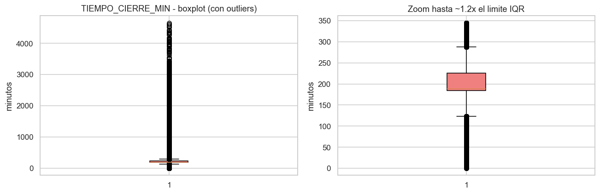
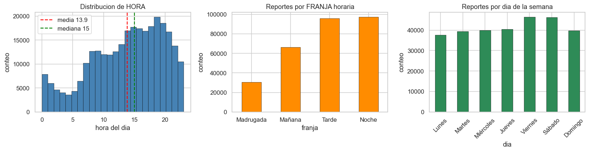
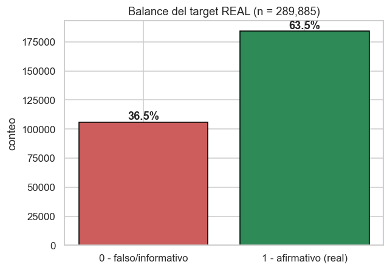
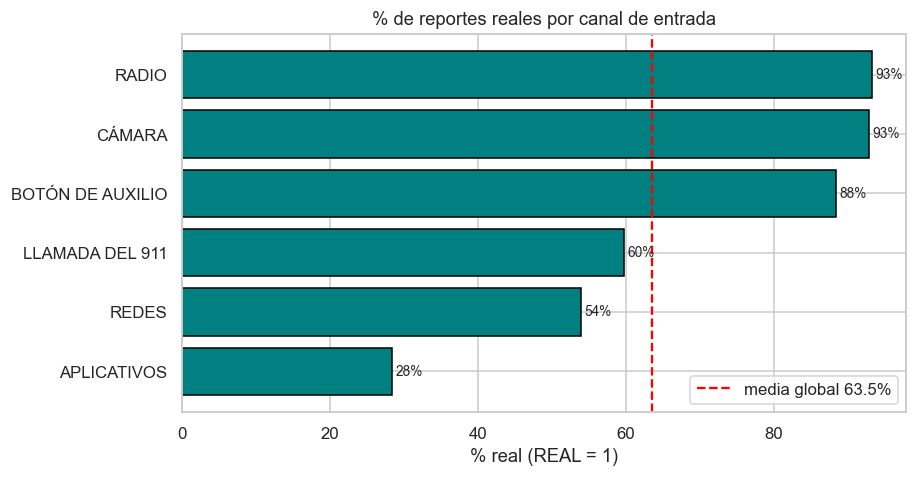
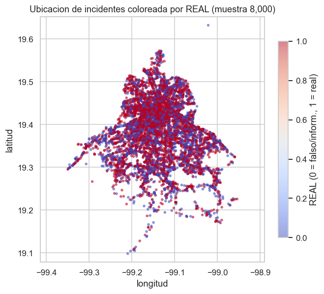
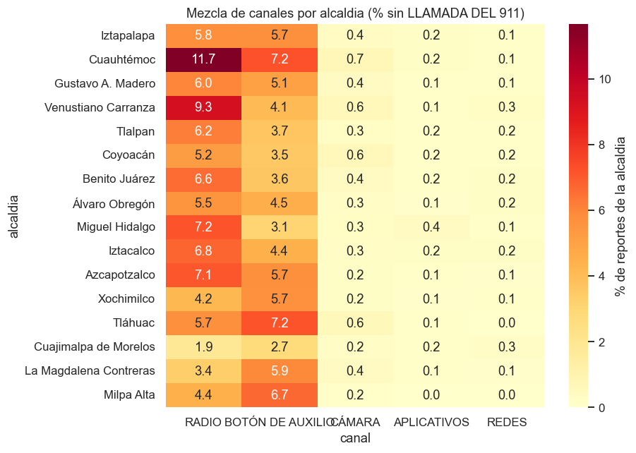
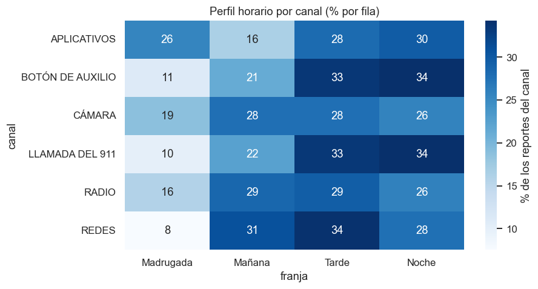
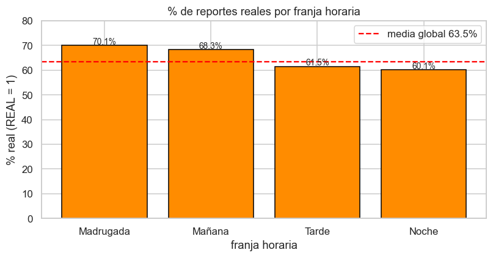

Triage de reportes de incidentes viales del C5 (CDMX 2022-2024)
Proyecto Final - Almacenes y Mineria de Datos
Profesora: Jessica Santizo Galicia Ayudantes: Diego Antonio Villalba Gonzalez y Ares Gael Castro Romero Integrante: Jose Ruben Alfaro Gonzalez — No. de cuenta: 320516436 Fecha: 10-06-2026
Notebook 01 - Analisis Exploratorio de Datos (EDA)
El problema: triage de veracidad de reportes viales
El Centro de Comando, Control, Computo, Comunicaciones y Contacto Ciudadano (C5) de la Ciudad de Mexico recibe cientos de miles de reportes de incidentes viales al año. Una fracción grande de esos reportes resulta ser falsa o simplemente informativa. Alguien llama por un choque que ya se resolvió, una cámara detecta un vehículo que en realidad estaba estacionado, etc. Despachar unidades de emergencia hacia reportes que no son reales desperdicia recursos y resta capacidad de respuesta a las emergencias verdaderas.
Este cuaderno explora los datos para entender que información, disponible en el momento en que entra el reporte (hora, tipo de incidente, fuente, alcaldía, ubicación), permitiendo así anticipar si un reporte se confirmara como real el actuar de las autoridades. Esa es la pregunta del target:
REAL = 1 si el reporte es real (cierre afirmativo, codigo_cierre == 'A'), REAL = 0 si es falso (F) o informativo (I).
La semilla 42 se fija para todo muestreo reproducible.
Frontera anti-fuga. Las columnas que solo se conocen al cerrar el reporte (codigo_cierre, CIERRE_DESC, TIEMPO_CIERRE_MIN) y clas_con_f_alarma (su categoria FALSA ALARMA es una clasificacion posterior) se usan solo para EDA y nunca como variables del modelo.
0. Configuracion
Primero, importamos librerias, fijamos la semilla y resolvemos las rutas a data/ con pathlib, relativas a la ubicacion del notebook (notebooks/), para que el cuaderno corra sin importar el directorio de trabajo.
import numpy as npimport pandas as pdimport matplotlib.pyplot as pltimport seaborn as snsfrom scipy import statsfrom pathlib import Pathimport sysSEMILLA =42np.random.seed(SEMILLA)sns.set_theme(style="whitegrid")plt.rcParams["figure.dpi"] =110pd.set_option("display.max_columns", 50)# Rutas relativas a la ubicacion del notebook (carpeta notebooks/).BASE = Path.cwd() if (Path.cwd() /"data").exists() else Path.cwd().parentDATA = BASE /"data"FIGURES = BASE /"figures"REPORTS = BASE /"reports"FIGURES.mkdir(exist_ok=True)REPORTS.mkdir(exist_ok=True)# El codigo fuente vive en src/ (clases y modulos). Lo importamos:ifstr(BASE) notin sys.path: sys.path.insert(0, str(BASE))from src.preparacion import PipelinePreparacion, pipeline_estandarfrom src.viz import barras, guardar, resumen_numericoprint("BASE :", BASE)print("DATA :", DATA)print("Semilla:", SEMILLA)
BASE : /Users/rou/Desktop/8voSemestre/Almacenes/finalProyectoAyM
DATA : /Users/rou/Desktop/8voSemestre/Almacenes/finalProyectoAyM/data
Semilla: 42
1. Diccionario de datos
A continuación presentamos el diccionario de variables. Este también se encuentra en reports/diccionario_datos.md.
Variable
Tipo
Significado
Valores posibles / rango
Rol
folio
texto (id)
Identificador unico del reporte.
Cadena tipo C2C/20211229/00212.
id (no feature)
FECHA_CREACION
datetime
Fecha-hora de creacion del reporte.
2022-01 a 2024-02 (tras depurar).
excluida (id temporal)
codigo_cierre
categorica
Como cerro el reporte. Base del target.
A=Afirmativo (real), D=Duplicado (real, ya reportado), F=Falso, I=Informativo.
excluida (base del target)
CIERRE_DESC
texto
Descripcion legible de codigo_cierre.
Texto libre por codigo.
excluida (id/descriptivo)
REAL
entero 0/1
TARGET. ¿El reporte es real (afirmativo)?
1 si codigo_cierre=='A'; 0 si F/I. Definido tras eliminar D.
target
HORA
entero
Hora del dia del reporte.
0-23.
feature (numerica)
MES
entero
Mes del reporte.
1-12.
feature (numerica)
ANIO
entero
Ano del reporte.
2022-2024.
feature (numerica)
latitud
float
Latitud del incidente (CDMX).
~19.09 - 19.63.
feature (numerica / clustering)
longitud
float
Longitud del incidente (CDMX).
~ -99.35 - -98.95.
feature (numerica / clustering)
tipo_incidente_c4
categorica (7)
Tipo grueso de incidente.
Accidente, Lesionado, Cadaver, Detencion ciudadana, Mi Calle, Sismo, Mi Taxi.
feature
incidente_c4
categorica (16)
Subtipo detallado del incidente.
Choque sin/con lesionados, Atropellado, Motociclista, Volcadura, Ciclista, Persona atrapada/desbarrancada, Vehiculo atrapado/varado, Choque con prensados, Accidente automovilistico, Incidente de transito, Vehiculo desbarrancado, Otros, Monopatin, Ferroviario, Persona atropellada.
feature
tipo_entrada
categorica (~9)
Canal por el que entro el reporte.
LLAMADA DEL 911 (mayoria), BOTON DE AUXILIO, RADIO, CAMARA, REDES, APLICATIVOS, LLAMADA APP911, SOS MUJERES *765, LECTOR DE PLACAS. (3 nulos.)
feature
alcaldia_catalogo
categorica (16)
Alcaldia de CDMX del incidente.
Las 16 alcaldias (Iztapalapa, Gustavo A. Madero, Cuauhtemoc, … Milpa Alta). (366 nulos.)
feature
dia_semana
categorica (7)
Dia de la semana del reporte.
Lunes…Domingo.
feature
FRANJA
categorica (4)
Franja horaria (derivada de HORA).
Madrugada, Mañana, Tarde, Noche.
feature
clas_con_f_alarma
categorica
Clasificacion operativa (con falsa alarma).
URGENCIAS MEDICAS, EMERGENCIA, DELITO, FALSA ALARMA, INCIDENTES EXTERNOS.
excluida (fuga fina)
TIEMPO_CIERRE_MIN
float (min)
Tiempo hasta cerrar el reporte.
Minutos > 0 (2 nulos).
excluida (fuga gruesa)
Decisiones de rol clave: El target REAL se define tras eliminar los duplicadosD (lo justificamos en la seccion 2). Además, clas_con_f_alarma y TIEMPO_CIERRE_MIN se excluyen del modelo por fuga, pues la primera es una clasificacion posterior al cierre (su categoria FALSA ALARMA delata el desenlace) y la segunda solo se conoce cuando el reporte ya cerro. folio, FECHA_CREACION, codigo_cierre y CIERRE_DESC son identificadores o la base del target.
1.1 Respaldo empirico del diccionario
Verificamos los tipos reales de cada columna y los valores efectivos de las categoricas clave y las numericas. Cargamos directamente el dataset de trabajo ya depurado c5_listo.parquet.
df = pd.read_parquet(DATA /"c5_listo.parquet")print("Dimensiones del dataset de trabajo (c5_listo):", df.shape)# Tipos por variable (respaldo del diccionario).df.dtypes.astype(str).rename("dtype").to_frame()
Dimensiones del dataset de trabajo (c5_listo): (289885, 18)
dtype
folio
string
REAL
int8
CIERRE_DESC
str
codigo_cierre
string
HORA
int16
MES
int16
ANIO
int16
latitud
Float64
longitud
Float64
tipo_incidente_c4
str
incidente_c4
str
tipo_entrada
str
alcaldia_catalogo
str
dia_semana
str
FRANJA
str
clas_con_f_alarma
str
TIEMPO_CIERRE_MIN
float64
FECHA_CREACION
datetime64[us]
# Valores reales de las categoricas clave (respaldo de "valores posibles").for col in ["codigo_cierre", "tipo_incidente_c4", "tipo_entrada", "FRANJA", "dia_semana"]:print(f"\n### {col} ({df[col].nunique(dropna=True)} categorias)")print(df[col].value_counts(dropna=False).head(12).to_string())
### codigo_cierre (3 categorias)
codigo_cierre
A 184067
F 102211
I 3607
### tipo_incidente_c4 (7 categorias)
tipo_incidente_c4
Accidente 262447
Lesionado 25848
Cadáver 1052
Mi Calle 307
Detención ciudadana 122
Mi Taxi 56
Sismo 53
### tipo_entrada (9 categorias)
tipo_entrada
LLAMADA DEL 911 253917
RADIO 19541
BOTÓN DE AUXILIO 14256
CÁMARA 1188
APLICATIVOS 504
REDES 438
LLAMADA APP911 35
NaN 3
SOS MUJERES *765 2
LECTOR DE PLACAS 1
### FRANJA (4 categorias)
FRANJA
Noche 97325
Tarde 95820
Mañana 66177
Madrugada 30563
### dia_semana (7 categorias)
dia_semana
Viernes 46428
Sábado 46329
Jueves 40381
Miércoles 39903
Domingo 39682
Martes 39468
Lunes 37694
# Rango/estadistica de las numericas (respaldo de "rango").df[["HORA", "MES", "ANIO", "latitud", "longitud", "TIEMPO_CIERRE_MIN"]].describe().T
count
mean
std
min
25%
50%
75%
max
HORA
289885.0
13.850441
6.084333
0.0
9.0
15.0
19.0
23.0
MES
289885.0
6.369547
3.58989
1.0
3.0
6.0
10.0
12.0
ANIO
289885.0
2022.6167
0.619983
2022.0
2022.0
2023.0
2023.0
2024.0
latitud
289885.0
19.381961
0.071024
19.094877
19.333475
19.38364
19.43398
19.632201
longitud
289885.0
-99.134408
0.062507
-99.35257
-99.17557
-99.137497
-99.092705
-98.94639
TIEMPO_CIERRE_MIN
289883.0
296.862295
340.365014
0.316667
184.7
188.783333
225.8
4657.133333
# Escribimos el mismo diccionario a reports/diccionario_datos.md (tabla markdown).diccionario_md ="""# Diccionario de datos - C5 incidentes viales (CDMX 2022-2024)**Proyecto Final - Almacenes y Mineria de Datos.** Profesora: Jessica Santizo Galicia.Ayudantes: Diego Antonio Villalba Gonzalez y Ares Gael Castro Romero. Fecha: 2026-06.Documenta cada variable, su significado, los valores que puede tomar y su rol(target / feature / excluida / id). Dataset de trabajo: data/c5_listo.parquet(289,885 filas, sin duplicados y sin el ano-ruido 2021).| Variable | Tipo | Significado | Valores posibles / rango | Rol ||---|---|---|---|---|| `folio` | texto (id) | Identificador unico del reporte. | Cadena tipo C2C/20211229/00212. | id (no feature) || `FECHA_CREACION` | datetime | Fecha-hora de creacion del reporte. | 2022-01 a 2024-02 (tras depurar). | excluida (id temporal) || `codigo_cierre` | categorica | Como cerro el reporte. Base del target. | A=Afirmativo (real), D=Duplicado (real, ya reportado), F=Falso, I=Informativo. | excluida (base del target) || `CIERRE_DESC` | texto | Descripcion legible de codigo_cierre. | Texto libre por codigo. | excluida (descriptivo) || `REAL` | entero 0/1 | TARGET: el reporte es real (afirmativo)? | 1 si codigo_cierre=='A'; 0 si F/I. Definido tras quitar D. | target || `HORA` | entero | Hora del dia del reporte. | 0-23. | feature (num) || `MES` | entero | Mes del reporte. | 1-12. | feature (num) || `ANIO` | entero | Ano del reporte. | 2022-2024. | feature (num) || `latitud` | float | Latitud del incidente (CDMX). | ~19.09-19.63. | feature (num / clustering) || `longitud` | float | Longitud del incidente (CDMX). | ~-99.35 a -98.95. | feature (num / clustering) || `tipo_incidente_c4` | cat (7) | Tipo grueso de incidente. | Accidente, Lesionado, Cadaver, Detencion ciudadana, Mi Calle, Sismo, Mi Taxi. | feature || `incidente_c4` | cat (16) | Subtipo detallado del incidente. | Choque sin/con lesionados, Atropellado, Motociclista, Volcadura, Ciclista, Persona atrapada/desbarrancada, Vehiculo atrapado/varado, Choque con prensados, Accidente automovilistico, Incidente de transito, Vehiculo desbarrancado, Otros, Monopatin, Ferroviario, Persona atropellada. | feature || `tipo_entrada` | cat (~9) | Canal por el que entro el reporte. | LLAMADA DEL 911 (mayoria), BOTON DE AUXILIO, RADIO, CAMARA, REDES, APLICATIVOS, LLAMADA APP911, SOS MUJERES *765, LECTOR DE PLACAS. (3 nulos.) | feature || `alcaldia_catalogo` | cat (16) | Alcaldia de CDMX del incidente. | Las 16 alcaldias (Iztapalapa, Gustavo A. Madero, Cuauhtemoc, ... Milpa Alta). (366 nulos.) | feature || `dia_semana` | cat (7) | Dia de la semana del reporte. | Lunes...Domingo. | feature || `FRANJA` | cat (4) | Franja horaria (derivada de HORA). | Madrugada, Mañana, Tarde, Noche. | feature || `clas_con_f_alarma` | categorica | Clasificacion operativa (con falsa alarma). | URGENCIAS MEDICAS, EMERGENCIA, DELITO, FALSA ALARMA, INCIDENTES EXTERNOS. | excluida (fuga fina) || `TIEMPO_CIERRE_MIN` | float (min) | Tiempo hasta cerrar el reporte. | Minutos > 0 (2 nulos). | excluida (fuga gruesa) |## Notas de rol- TARGET (REAL): se define tras ELIMINAR los duplicados D. Un cierre D es un evento real ya reportado; su deduplicacion es tarea del sistema de despacho, no del modelo de veracidad. Entre el resto, REAL=1 si 'A' (afirmativo), 0 si 'F'/'I'.- Excluidas por fuga: clas_con_f_alarma (fuga fina: 'FALSA ALARMA' es clasificacion posterior al cierre) y TIEMPO_CIERRE_MIN (fuga gruesa: solo se conoce al cerrar).- Excluidas por ser id o base del target: folio, FECHA_CREACION, codigo_cierre, CIERRE_DESC.## Features del modelo- Numericas: HORA, MES, ANIO, latitud, longitud.- Categoricas: tipo_incidente_c4, incidente_c4, tipo_entrada, alcaldia_catalogo, dia_semana, FRANJA."""(REPORTS /"diccionario_datos.md").write_text(diccionario_md, encoding="utf-8")print("Diccionario escrito en:", REPORTS /"diccionario_datos.md")
Aqui mostramos como se obtuvo el dataset de trabajo a partir del dataset crudo de modelado, aplicando el patron de diseno Pipeline. Encadenamos pasos (cada uno una funcion df -> df) en orden, registrando las filas antes y despues de cada paso en una bitacora auditable.
Partimos de c5_modelado.parquet (504,261 filas, antes de depurar: conserva codigo_cierre y todas las columnas).
crudo = pd.read_parquet(DATA /"c5_modelado.parquet")print("Dataset de modelado (antes de depurar):", crudo.shape)crudo[["folio", "codigo_cierre", "ANIO", "tipo_entrada"]].head(3)
Dataset de modelado (antes de depurar): (504261, 18)
folio
codigo_cierre
ANIO
tipo_entrada
0
C2C/20211229/00212
I
2021
BOTÓN DE AUXILIO
1
C2C/20211231/00183
A
2021
BOTÓN DE AUXILIO
2
C2C/20220101/00012
A
2022
BOTÓN DE AUXILIO
2.1 Analisis de codigo_cierre: por que eliminamos los duplicados
El target nace de codigo_cierre. Veamos su distribucion.
Decision de diseno: los duplicados D se eliminan. La pregunta de negocio es ¿el reporte es real (afirmativo) o falso?. Un cierre D (Duplicado) es un evento REAL ya reportado: significa que alguien mas ya levanto ese mismo incidente. Detectar que un reporte entrante coincide con uno ya abierto es tarea del sistema de despacho (verificar si ya hay una unidad en el sitio), no del modelo de veracidad. Mezclar D en el target contaminaria la pregunta: estariamos pidiendo al modelo que prediga “novedad operativa” en vez de “veracidad”.
Por eso eliminamos los D (42.5%) y, entre el resto, definimos:
REAL = 1 si codigo_cierre == 'A' (afirmativo) · REAL = 0 si F (falso) o I (informativo).
Alternativa descartada. Si en cambio contaramos D como real (REAL = 1 para A y D), el balance pasaria a ~79/21 a favor de la clase real: un desbalance mucho peor y, sobre todo, un target borroso que confunde veracidad con duplicidad. Preferimos un target limpio y un balance mas manejable (63.5/36.5).
2.2 La clase PipelinePreparacion y los pasos
La clase PipelinePreparacion y los pasos de limpieza viven en src/preparacion.py. Cada paso es una subclase de PasoLimpieza (QuitarDuplicados, QuitarAnioRuido, ConstruirTarget) con una unica responsabilidad (herencia); PipelinePreparacion los encadena (composicion) e imprime la bitacora. Aqui los importamos y aplicamos.
# La clase y los pasos se importan de src/preparacion.py (ver celda de# configuracion). pipeline_estandar() arma el pipeline del proyecto:# QuitarDuplicados -> QuitarAnioRuido -> ConstruirTargetfrom src.preparacion import (PipelinePreparacion, QuitarDuplicados, QuitarAnioRuido, ConstruirTarget, pipeline_estandar)print("Pasos del pipeline:", [p.nombre for p in pipeline_estandar().pasos])
Pasos del pipeline: ['quitar_duplicados', 'quitar_anio_ruido', 'construir_target']
# Aplicamos el pipeline (definido en src/) y observamos la bitacora.pipeline = pipeline_estandar()print("Bitacora del pipeline de preparacion:")listo = pipeline.aplicar(crudo)print("\nResultado final:", listo.shape)print("Coincide con c5_listo.parquet (289,885 filas):", len(listo) ==289885)
Bitacora del pipeline de preparacion:
quitar_duplicados 504,261 -> 289,935
quitar_anio_ruido 289,935 -> 289,885
construir_target 289,885 -> 289,885
Resultado final: (289885, 18)
Coincide con c5_listo.parquet (289,885 filas): True
Interpretacion del patron Pipeline. La bitacora deja la trazabilidad completa: 504,261 -> 289,935 -> 289,885.
El primer paso retira los 214,326 duplicados D el segundo elimina los 50 reportes de 2021 (ruido de frontera: unos cuantos reportes con fecha de diciembre-2021 que se colaron en el corte 2022-2024), el tercero construye el target binario REAL. Cada paso es una funcion pequeña y verificable, y agregar o quitar un paso es trivial. Por eso preferimos usar este patrón.
El resultado en memoria es identico al archivo data/c5_listo.parquet que ya cargamos en la seccion 1 (no reescribimos a disco). En adelante seguimos con ese dataset de trabajo de 289,885 filas.
# Confirmamos el balance del target sobre el dataset depurado.balance = df["REAL"].value_counts(normalize=True).sort_index()print("Balance del target REAL:")print(f" 0 (falso/informativo): {balance[0]:.3f}")print(f" 1 (afirmativo/real) : {balance[1]:.3f}")
Las funciones auxiliares de graficado (barras, guardar) y de estadistica (resumen_numerico) viven en src/viz.py y ya se importaron en la celda de configuracion.
# `barras`, `guardar` y `resumen_numerico` se importan de src/viz.py# (ver celda de configuracion). No se redefinen aqui.print("Helpers de graficado cargados desde src.viz")
Helpers de graficado cargados desde src.viz
3.1 Calidad de los datos: faltantes y duplicados
na = df.isna().sum()na = na[na >0].sort_values(ascending=False)tabla_na = pd.DataFrame({"faltantes": na, "porcentaje": (na /len(df) *100).round(3)})print("Faltantes por columna (solo columnas con algun nulo):")print(tabla_na.to_string())print("\nFilas exactamente duplicadas:", int(df.duplicated().sum()))print("Folios duplicados :", int(df["folio"].duplicated().sum()))
Interpretacion. El dataset esta muy limpio. Solo tres columnas tienen faltantes y todos son marginales. alcaldia_catalogo (366 nulos, 0.13%) y tipo_entrada (3 nulos) son reportes cuya ubicacion o canal no quedo registrado, y TIEMPO_CIERRE_MIN (2 nulos) no es feature del modelo. No hay folios repetidos ni filas identicas, coherente con que ya retiramos los duplicados D. Cada registro es un reporte único. Los nulos de alcaldia_catalogo/tipo_entrada los maneja el ColumnTransformer del notebook 02 con una categoria explicita, asi que no eliminamos filas aqui.
3.2 Estadistica descriptiva: HORA y TIEMPO_CIERRE_MIN
Para las dos numericas mas interesantes reportamos media, mediana, desviacion, cuartiles, rango y forma (asimetria y curtosis con scipy).
# resumen_numerico viene de src/viz.py; aqui solo lo aplicamos.resumen = pd.DataFrame({"HORA": resumen_numerico(df["HORA"]),"TIEMPO_CIERRE_MIN": resumen_numerico(df["TIEMPO_CIERRE_MIN"]),}).round(3)resumen
HORA
TIEMPO_CIERRE_MIN
n
289885.000
289883.000
media
13.850
296.862
mediana
15.000
188.783
std
6.084
340.365
min
0.000
0.317
Q1
9.000
184.700
Q3
19.000
225.800
max
23.000
4657.133
asimetria
-0.519
3.726
curtosis
-0.580
15.496
Interpretacion.HORA es casi simetrica (asimetria ~ -0.52) y plana (curtosis negativa ~ -0.58): los reportes se reparten a lo largo del dia con una concentracion vespertina (mediana 15 h). En cambio TIEMPO_CIERRE_MIN esta fuertemente sesgada a la derecha (asimetria ~ 3.7) y tiene una cola extremadamente cargada a la derecha (curtosis ~ 15.5): mediana ~189 min pero con una cola larguisima hasta ~4,657 min.
Esta forma extrema es tipica de tiempos de servicio y, sumada a que solo se conoce al cerrar el reporte, refuerza que TIEMPO_CIERRE_MIN quede fuera del modelo (fuga); aqui la usamos solo como ilustracion de outliers.
3.3 Valores atipicos en TIEMPO_CIERRE_MIN (boxplot + regla IQR)
t = df["TIEMPO_CIERRE_MIN"].dropna().astype("float64")Q1, Q3 = t.quantile(.25), t.quantile(.75)IQR = Q3 - Q1lim_sup = Q3 +1.5* IQRn_out =int((t > lim_sup).sum())print(f"Q1={Q1:.1f} Q3={Q3:.1f} IQR={IQR:.1f} limite superior={lim_sup:.1f} min")print(f"Outliers (> limite): {n_out:,} ({n_out/len(t)*100:.2f}%)")fig, axes = plt.subplots(1, 2, figsize=(12, 4))axes[0].boxplot(t, vert=True, showfliers=True, patch_artist=True, boxprops=dict(facecolor="lightcoral"))axes[0].set_title("TIEMPO_CIERRE_MIN - boxplot (con outliers)")axes[0].set_ylabel("minutos")# Zoom recortando la cola para ver la caja.axes[1].boxplot(t.clip(upper=lim_sup *1.2), vert=True, patch_artist=True, boxprops=dict(facecolor="lightcoral"))axes[1].set_title("Zoom hasta ~1.2x el limite IQR")axes[1].set_ylabel("minutos")fig.tight_layout()guardar(fig, "01_outliers_tiempo_cierre.png")plt.show()
Q1=184.7 Q3=225.8 IQR=41.1 limite superior=287.5 min
Outliers (> limite): 49,211 (16.98%)
Figura guardada: /Users/rou/Desktop/8voSemestre/Almacenes/finalProyectoAyM/figures/01_outliers_tiempo_cierre.png

La regla IQR marca una fraccion notable de reportes con tiempos de cierre extremos (la cola a la derecha del boxplot). No los eliminamos, primero porque TIEMPO_CIERRE_MIN no es feature del modelo y segundo, esos tiempos largos son reales (reportes complejos que tardan en cerrarse), no errores de captura. Podríamos imaginarnos que en casos donde hubo casualidades la resolución del caso sea más compleja que por ejemplo un choque ligero. El zoom confirma que el grueso de la distribucion vive alrededor de ~3 horas, con una cola operativa larga pero legitima.
3.4 Distribuciones: HORA, FRANJA y dia_semana
fig, axes = plt.subplots(1, 3, figsize=(15, 4))# Histograma de HORA con media y mediana.axes[0].hist(df["HORA"].astype("float64"), bins=24, color="steelblue", edgecolor="black", linewidth=.4)axes[0].axvline(df["HORA"].mean(), color="red", ls="--", label=f"media {df['HORA'].mean():.1f}")axes[0].axvline(df["HORA"].median(), color="green", ls="--", label=f"mediana {df['HORA'].median():.0f}")axes[0].set_title("Distribucion de HORA"); axes[0].set_xlabel("hora del dia")axes[0].set_ylabel("conteo"); axes[0].legend()# Barras de FRANJA (orden natural del dia).orden_franja = ["Madrugada", "Mañana", "Tarde", "Noche"]fr = df["FRANJA"].value_counts().reindex(orden_franja)barras(fr, "Reportes por FRANJA horaria", "franja", ax=axes[1], color="darkorange")# Barras de dia_semana (orden natural).orden_dia = ["Lunes", "Martes", "Miércoles", "Jueves", "Viernes", "Sábado", "Domingo"]ds = df["dia_semana"].value_counts().reindex(orden_dia)barras(ds, "Reportes por dia de la semana", "dia", ax=axes[2], color="seagreen", rot=45)fig.tight_layout()guardar(fig, "01_distribuciones.png")plt.show()
Figura guardada: /Users/rou/Desktop/8voSemestre/Almacenes/finalProyectoAyM/figures/01_distribuciones.png

Interpretacion. En HORA hay pocos reportes de madrugada (3-6 h), ascenso a lo largo de la mañana y un grueso concentrado de la tarde a la noche, con la mediana en las 15 h. Eso se refleja en FRANJA: Tarde y Noche acumulan el mayor volumen y la Madrugada es la franja mas vacia, siguiendo el ritmo de la actividad vial de la ciudad. Por dia de la semana destacan viernes y sabado (mayor movilidad y vida nocturna), mientras el lunes es el más tranquilo. Son patrones plausibles y utiles como señal temporal moderada para el modelo.
Figura guardada: /Users/rou/Desktop/8voSemestre/Almacenes/finalProyectoAyM/figures/01_balance_target.png

Razon de desbalance (real : no real): 1.74 : 1
Tras quitar los duplicados, 63.5% de los reportes son reales (A) y 36.5% son falsos/informativos (F/I). Hay un desbalance moderado (~1.74 : 1) a favor de la clase real. Esto significa que:
La metrica rectora sera F1 macro, porque la accuracy podría ser alcanzada casi un clasificador trivial que diga “real” a todo Se usara class_weight='balanced' para no sacrificar el recall de la clase no real (filtrar falsos es justo el valor de negocio).
Nota: este balance limpio (63.5/36.5) es preferible al ~79/21 que daria contar los duplicados como reales, como argumentamos en la seccion 2.
3.6 Correlaciones entre numericas y dispersion espacial
La rubrica pide una matriz de correlaciones y scatter plots de pares relevantes. Como el problema tiene pocas numericas, calculamos la correlacion de Spearman (monotona, robusta a no-linealidad) entre ellas y con el target, y visualizamos un par espacial relevante (longitud vs latitud) coloreado por REAL.
Figura guardada: /Users/rou/Desktop/8voSemestre/Almacenes/finalProyectoAyM/figures/01_correlacion.png

Interpretacion. Las variables numericas estan practicamente descorrelacionadas entre si (|r| < 0.1, salvo un leve MES-ANIO de -0.21 por el corte temporal) y, sobre todo, su correlacion con el target REAL es muy baja: la mayor entre las features del modelo es latitud (0.08), seguida de HORA (-0.07). El unico valor apreciable, TIEMPO_CIERRE_MIN (0.26), proviene de una variable de fuga (excluida del modelo). La lectura clave es que las numericas aportan poca senal monotona sobre la veracidad; el poder predictivo vendra de las categoricas (canal, tipo de incidente), justo lo que confirmara la importancia por permutacion del notebook 02.
# Scatter de un par espacial relevante: longitud vs latitud por veracidad.m = df.sample(n=8000, random_state=SEMILLA)fig, ax = plt.subplots(figsize=(6.2, 5.6))sc = ax.scatter(m["longitud"].astype("float64"), m["latitud"].astype("float64"), c=m["REAL"], cmap="coolwarm", s=7, alpha=.5)ax.set_xlabel("longitud"); ax.set_ylabel("latitud")ax.set_aspect("equal", adjustable="datalim")ax.set_title("Ubicacion de incidentes coloreada por REAL (muestra 8,000)")fig.colorbar(sc, ax=ax, label="REAL (0 = falso/inform., 1 = real)", shrink=.8)fig.tight_layout()guardar(fig, "01_scatter_geo.png")plt.show()
Figura guardada: /Users/rou/Desktop/8voSemestre/Almacenes/finalProyectoAyM/figures/01_scatter_geo.png

Interpretacion. En el scatter espacial los reportes reales y los falsos/informativos se entremezclan por toda la ciudad: no hay una frontera geografica nitida que los separe, coherente con la baja correlacion de latitud/longitud con el target. Existe estructura espacial (mas densidad en el centro-oriente), pero es sutil y no separable de forma lineal simple; sera el clustering espacial del notebook 03 (DBSCAN) el que la explote para hallar corredores de incidentes.
4. Geografia del reporte: ¿quien reporta, donde y que tan confiable es?
La pregunta de negocio central del EDA: ¿que canal de entrada es mas confiable, y como se mezcla con la alcaldia? Esta seccion cuenta esa historia.
4.1 Confiabilidad por canal de entrada (tipo_entrada)
Para cada canal calculamos su volumen y su tasa de confirmacion (% de reportes con REAL = 1).
g = (df.groupby("tipo_entrada", observed=True) .agg(n=("REAL", "size"), pct_real=("REAL", "mean")))g["pct_real"] = (g["pct_real"] *100).round(1)g["pct_volumen"] = (g["n"] /len(df) *100).round(2)g = g.sort_values("n", ascending=False)print(g[["n", "pct_volumen", "pct_real"]].to_string())# Solo canales con volumen suficiente para una tasa estable (n >= 100).g_plot = g[g["n"] >=100].sort_values("pct_real")fig, ax = plt.subplots(figsize=(8.5, 4.5))bars = ax.barh(g_plot.index, g_plot["pct_real"], color="teal", edgecolor="black")ax.axvline(df["REAL"].mean() *100, color="red", ls="--", label=f"media global {df['REAL'].mean()*100:.1f}%")for b, v inzip(bars, g_plot["pct_real"]): ax.text(b.get_width() +.5, b.get_y() + b.get_height()/2, f"{v:.0f}%", va="center", fontsize=9)ax.set_title("% de reportes reales por canal de entrada")ax.set_xlabel("% real (REAL = 1)"); ax.legend()fig.tight_layout()guardar(fig, "01_fuente_confirmacion.png")plt.show()
n pct_volumen pct_real
tipo_entrada
LLAMADA DEL 911 253917 87.59 59.8
RADIO 19541 6.74 93.3
BOTÓN DE AUXILIO 14256 4.92 88.4
CÁMARA 1188 0.41 92.9
APLICATIVOS 504 0.17 28.4
REDES 438 0.15 53.9
LLAMADA APP911 35 0.01 48.6
SOS MUJERES *765 2 0.00 100.0
LECTOR DE PLACAS 1 0.00 100.0
Figura guardada: /Users/rou/Desktop/8voSemestre/Almacenes/finalProyectoAyM/figures/01_fuente_confirmacion.png

El canal es muy informativo. Los reportes que entran por canales institucionales operados por personal del C5 son casi siempre reales: RADIO ~93%, CAMARA ~93% y BOTON DE AUXILIO ~88%. En cambio la LLAMADA DEL 911, que es el ~88% del volumen, confirma solo ~60%, justo por debajo de la media global. Los aplicativos ciudadanos son los menos confiables (APLICATIVOS ~28%). Implicacion operativa directa: se puede despachar de manera casi automatica con alta prioridad lo que entra por canales institucionales y aplicar mas escrutinio a la avalancha de llamadas ciudadanas, que es donde se concentra la ambiguedad. La fuente será el predictor más informativo del modelo.
4.2 Confiabilidad por alcaldia
a = (df.groupby("alcaldia_catalogo", observed=True) .agg(n=("REAL", "size"), pct_real=("REAL", "mean")))a["pct_real"] = (a["pct_real"] *100).round(1)a = a.sort_values("pct_real", ascending=False)fig, ax = plt.subplots(figsize=(8.5, 5))ax.barh(a.index[::-1], a["pct_real"][::-1], color="slateblue", edgecolor="black")ax.axvline(df["REAL"].mean() *100, color="red", ls="--", label=f"media global {df['REAL'].mean()*100:.1f}%")ax.set_title("% de reportes reales por alcaldia")ax.set_xlabel("% real (REAL = 1)"); ax.legend()fig.tight_layout()guardar(fig, "01_alcaldia_confirmacion.png")plt.show()print(a[["n", "pct_real"]].to_string())
Figura guardada: /Users/rou/Desktop/8voSemestre/Almacenes/finalProyectoAyM/figures/01_alcaldia_confirmacion.png
Hay heterogeneidad geografica. El ranking va de Cuauhtemoc (~75%) y Azcapotzalco (~72%) hasta Cuajimalpa (~51%) y Xochimilco (~52%), un rango de ~25 puntos. Las alcaldias centrales con mas camaras, operadores y trafico verificable tienden a mayor tasa de confirmación que la periferia. La diferencia es real pero menor que la diferencia por canal (RADIO ~93% vs 911 ~60% son ~33 puntos): la geografia aporta señal complementaria, que el clustering del notebook 03 explotara como hotspots.
4.3 Mezcla canal x alcaldia: heatmap y prueba de independencia
¿La mezcla de canales cambia entre alcaldias? Construimos la tabla de contingencia, la mostramos como heatmap (en % por alcaldia, excluyendo la LLAMADA DEL 911 que aplastaria la escala con ~88%) y medimos la asociacion con chi-cuadrado y la V de Cramer.
# Tabla de contingencia completa (conteos) para el test.ct = pd.crosstab(df["alcaldia_catalogo"], df["tipo_entrada"])chi2, p, dof, _ = stats.chi2_contingency(ct)n = ct.values.sum()cramer = np.sqrt((chi2 / n) / (min(ct.shape) -1))print(f"chi2 = {chi2:,.1f} p-value = {p:.3g} dof = {dof}")print(f"V de Cramer = {cramer:.4f} (efecto pequeno < 0.10)")# Heatmap: % de cada canal dentro de la alcaldia, SIN la LLAMADA DEL 911.mezcla = ct.div(ct.sum(axis=1), axis=0) *100# % sobre el total de la alcaldiamezcla = mezcla.loc[ct.sum(axis=1).sort_values(ascending=False).index]# Solo canales (sin 911) con presencia apreciable para un heatmap legible.canales_vis = [c for c in mezcla.columns if c !="LLAMADA DEL 911"]canales_vis = mezcla[canales_vis].sum().sort_values(ascending=False).head(5).indexfig, ax = plt.subplots(figsize=(8.5, 6))sns.heatmap(mezcla[canales_vis], annot=True, fmt=".1f", cmap="YlOrRd", cbar_kws={"label": "% de reportes de la alcaldia"}, ax=ax)ax.set_title("Mezcla de canales por alcaldia (% sin LLAMADA DEL 911)")ax.set_xlabel("canal"); ax.set_ylabel("alcaldia")fig.tight_layout()guardar(fig, "01_mezcla_canal_alcaldia.png")plt.show()
chi2 = 3,719.8 p-value = 0 dof = 120
V de Cramer = 0.0401 (efecto pequeno < 0.10)
Figura guardada: /Users/rou/Desktop/8voSemestre/Almacenes/finalProyectoAyM/figures/01_mezcla_canal_alcaldia.png
El p-value es ~0 (rechazo de independencia), es decir, la alcaldia y el canal no son independientes. Pero con n ~ 290k casi cualquier asociacion sale “significativa”, asi que lo que importa es el tamano de efecto: la V de Cramer ~ 0.04 es muy pequeña. Es decir, si existe relacion entre donde ocurre el reporte y por que canal entra, la CAMARA pesa más en alcaldias centrales como Cuauhtemoc, y el BOTON DE AUXILIO comunitario pesa mas en la periferia (Milpa Alta, Tlahuac), pero es debil en lo global, porque el dominio aplastante de la LLAMADA DEL 911 (~88% en todas) homogeneiza la mezcla. La geografia modula los canales minoritarios pero no reescribe el patrón dominante.
4.4 Canal x franja horaria
¿En que momento del dia reporta cada canal? Normalizamos por fila (perfil horario de cada canal) para que el volumen del 911 no aplaste la lectura.
orden_franja = ["Madrugada", "Mañana", "Tarde", "Noche"]mf = pd.crosstab(df["tipo_entrada"], df["FRANJA"]).reindex(columns=orden_franja)# Solo canales con volumen suficiente.mf = mf[mf.sum(axis=1) >=100]perfil = mf.div(mf.sum(axis=1), axis=0) *100# % por canalfig, ax = plt.subplots(figsize=(8.5, 4.5))sns.heatmap(perfil, annot=True, fmt=".0f", cmap="Blues", cbar_kws={"label": "% de los reportes del canal"}, ax=ax)ax.set_title("Perfil horario por canal (% por fila)")ax.set_xlabel("franja"); ax.set_ylabel("canal")fig.tight_layout()guardar(fig, "01_canal_franja.png")plt.show()
Figura guardada: /Users/rou/Desktop/8voSemestre/Almacenes/finalProyectoAyM/figures/01_canal_franja.png

La CAMARA y la RADIO tienen el perfil mas plano y mas diurno, con una proporcion relativamente alta en madrugada-manana. La llamada ciudadana y el boton de auxilio se concentran en tarde-noche, siguiendo el ritmo de la actividad humana. En otras palabras: en las horas valle (madrugada) la vigilancia institucional sostiene una proporcion mayor del reporte, justo cuando hay menos ciudadanos despiertos para llamar, y como esos canales confirman ~90%, la madrugada hereda parte de su alta confiabilidad (coherente con que la franja Madrugada tenga la mayor tasa de % real).
4.5 Confiabilidad por franja horaria
Cerramos la geografía del reporte mirando la dimensión temporal de la confiabilidad: ¿la proporción de reportes reales cambia según la franja horaria (Madrugada / Mañana / Tarde / Noche)? A diferencia de la sección 4.4 —que describía qué canal domina en cada franja—, aquí medimos directamente la tasa de veracidad (% REAL) por franja.
n pct_volumen pct_real
FRANJA
Madrugada 30563 10.5 70.1
Mañana 66177 22.8 68.3
Tarde 95820 33.1 61.5
Noche 97325 33.6 60.1
Figura guardada: /Users/rou/Desktop/8voSemestre/Almacenes/finalProyectoAyM/figures/01_franja_confirmacion.png

La confiabilidad decae a lo largo del día. Los reportes de madrugada (70.1%) y mañana (68.3%) superan claramente la media global (63.5%), mientras que los de tarde (61.5%) y noche (60.1%) quedan por debajo. Hay una brecha de 10 puntos entre la franja más confiable y la menos confiable. El detalle operativo es que tarde y noche concentran además el mayor volumen (33.1% y 33.6% de los reportes), es decir, las horas con más reportes son justamente las de menor proporción de incidentes reales y de madrugada llegan pocos reportes pero casi todos genuinos, mientras que en la noche el sistema recibe muchos reportes y una fracción mayor resulta falsa o informativa. La franja horaria aporta así una señal modesta pero coherente para la clasificación, complementaria a la del canal de entrada (sección 4.1).